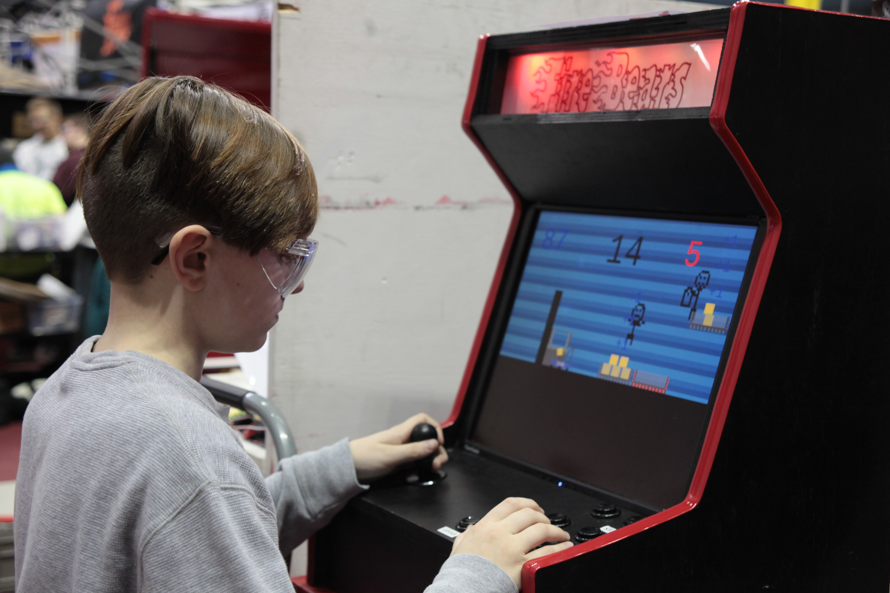

FRC - FIRST Robotics Competition, a league of high school robotics teams that build robots and compete against each other. This game is a simulation of what the high school teams must do during the robotics competition this year.
I designed this game in a way that allows it to work on a custom arcade cabinet that was built by a student on the high school robotics team I volunteer at (as a programming teacher). The arcade cabinet has been brought to several of the team's events and used as a show-piece, open to the public.
(Image of a kid playing the game on the arcade machine)
The game can be played here